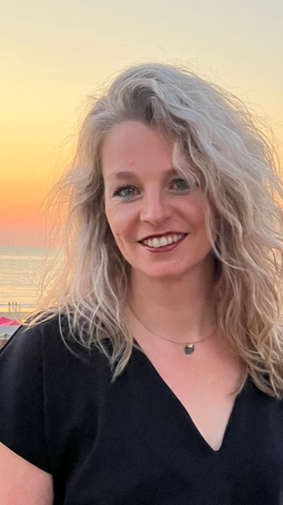

<style>
    #section1.therapy-center {
        overflow: hidden;
        margin-top: 100px;
    }

    #section1.therapy-center .container {
        display: flex;
        flex-wrap: wrap;
    }

    #section1.therapy-center .container .rectangle-top {
        position: absolute;
        right: 0;
        top: 0;
        width: 45%;
        height: 45%;
        background-color: var(--color-accent1);
        z-index: -1;
    }

    #section1.therapy-center .container .text {
        width: 45%;
        padding-left: 30px;
        padding-right: 5%;
        margin-top: 100px;
        font-size: 20px;
    }

    #section1.therapy-center .container .text h1 {
        color: var(--color-accent1);
        font-size: 60px;
        font-weight: 800;
    }

    #section1.therapy-center .container .text p {
        color: var(--color-gray);
        margin-top: 30px;
        margin-bottom: 40px;
        line-height: 2;
    }

    #section1.therapy-center .container .image {
        display: flex;
        overflow: hidden;
        width: 46%;
        height: 750px;
        margin-top: 75px;
    }

    #section1.therapy-center .container .image img {
        position: relative;
        right: 50px;
        bottom: 20px;
        height: 800px;
    }

    #section1.therapy-center .container .rectangle-container {
        height: 250px;
        width: 100%;
    }

    #section1.therapy-center .container .rectangle-container .rectangle-bottom {
        position: relative;
        right: -250px;
        top: -125px;
        width: 95%;
        height: 250px;
        background-color: var(--color-accent2);
        z-index: -1;
    }


    @media (min-width: 992px) and (max-width: 1199px) {
        #section1.therapy-center .container .text {
            margin-top: 30px;
        }

        #section1.therapy-center .container .text h1 {
            font-size: 55px;
            line-height: 1.2;
        }

        #section1.therapy-center .container .text p {
            line-height: 1.8;
            font-size: 18px;
        }

        #section1.therapy-center .container .rectangle-top {
            width: 400px;
            height: 380px;
        }

        #section1.therapy-center .container .image {
            margin-top: 60px;
            height: 100%;
            background-color: black;
        }

        #section1.therapy-center .container .image img {
            right: 10px;
            height: 640px;
            bottom: 0;
        }

        #section1.therapy-center .container .rectangle-container {
            height: 100px;
        }

        #section1.therapy-center .container .rectangle-container .rectangle-bottom {
            right: -290px;
            top: -200px;
            height: 175px;
        }
    }

    @media (min-width: 768px) and (max-width: 991px) {
        #section1.therapy-center .container .text {
            margin-top: 30px;
        }

        #section1.therapy-center .container .text h1 {
            font-size: 50px;
            line-height: 1.2;
        }

        #section1.therapy-center .container .text p {
            line-height: 1.8;
            font-size: 18px;
        }

        #section1.therapy-center .container .image {
            margin-top: 50px;
            height: 100%;
        }

        #section1.therapy-center .container .image img {
            height: 505px;
        }

        #section1.therapy-center .container .rectangle-container {
            height: 150px;
        }

        #section1.therapy-center .container .rectangle-container .rectangle-bottom {
            right: -150px;
            top: -80px;
            height: 150px;
        }
    }
</style>

<head>
    <link rel="stylesheet" href="../base.css">
    <link rel="stylesheet" href="../main.css">
</head>

<section id="section1" class="therapy-center">
    <div class="container page-wrapper">
        <div class="rectangle-top"></div>
        <div class="text">
            <h1>THERAPY<br>CENTER</h1>
            <p>Welkom op de website Fysio Lin. Op deze website kunt u meer informatie terugvinden over wat ik kan en waar ik u allemaal mee kan helpen. Ik werk als fysiotherapeut en als manueel therapeut ZZP’er op locatie. Ik kan u bijvoorbeeld ook helpen als waarnemer. Mocht u hierover nog vragen hebben, neem gerust contact met mij op, dan kunnen we samen naar de mogelijkheden kijken. </p>
            <button class="button_link">learn more</button>
        </div>
        <div class="image">
            
        </div>
        <div class="rectangle-container">
            <div class="rectangle-bottom"></div>
        </div>
    </div>
</section>